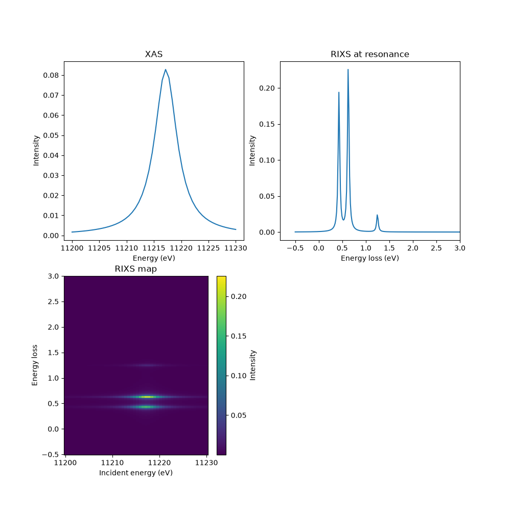
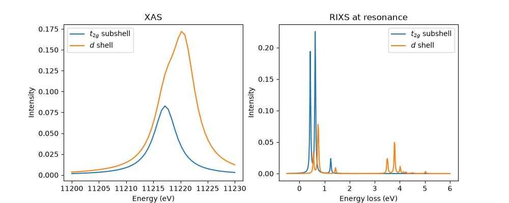

Note
Go to the end to download the full example code.
RIXS calculations for an atomic model
Here we show how to compute RIXS for a single site atomic model with crystal field and electron-electron interactions. We take the case of Sr2YIrO6 from Ref. [1] as the material in question. The aim of this example is to illustrate the procedure and to provide what we hope is useful advice. What is written is not meant to be a replacement for reading the docstrings of the functions, which can always be accessed on the edrixs website or by executing functions with ?? in IPython.
import edrixs
import numpy as np
import matplotlib.pyplot as plt
Specify active core and valence orbitals
Sr2YIrO6 has a \(5d^4\) electronic configuration and we want to calculate the \(L_3\) edge spectrum i.e. resonating with a \(2p_{3/2}\) core hole. We will start by including only the \(t_{2g}\) valence orbitals.
shell_name = ('t2g', 'p32')
v_noccu = 4
Slater parameters
Here we want to use Hund’s interaction \(J_H\) and spin orbit coupling \(\lambda\) as adjustable parameters to match experiment. We will take the core hole interaction parameter from the Hartree Fock numbers EDRIXS has in its database. These need to be converted and arranged into the order required by EDRIXS.
Ud = 2
JH = 0.25
lam = 0.42
F0_d, F2_d, F4_d = edrixs.UdJH_to_F0F2F4(Ud, JH)
info = edrixs.utils.get_atom_data('Ir', '5d', v_noccu, edge='L3')
G1_dp = info['slater_n'][5][1]
G3_dp = info['slater_n'][6][1]
F0_dp = edrixs.get_F0('dp', G1_dp, G3_dp)
F2_dp = info['slater_n'][4][1]
slater_i = [F0_d, F2_d, F4_d] # Fk for d
slater_n = [
F0_d, F2_d, F4_d, # Fk for d
F0_dp, F2_dp, # Fk for dp
G1_dp, G3_dp, # Gk for dp
0.0, 0.0 # Fk for p
]
slater = [slater_i, slater_n]
Diagonalization
The EDRIXS interface separates the physical model from the methods used to
compute XAS or RIXS. model_1v1c() returns one-body
matrices
(emat_i and emat_n), Coulomb tensors (umat_i and
umat_n), compact Fock-basis specifications (basis_i and
basis_n), and Cartesian dipole matrices (trans_mat). The
impurity one-body matrix imp_mat contains the valence spin–orbit
coupling and, below, the crystal field.
i quantities describe the initial and final states without a core
hole, while the n quantities describe the intermediate state with a
core hole. Both orbital-space Hamiltonians include the core, and basis_i
explicitly fixes its occupancy to a full shell. The v_noccu argument counts
only valence electrons.
get_ops() converts these backend-independent
ingredients into many-body initial/final and intermediate Hamiltonians, plus
dipole operators
that map the initial Fock space to the intermediate one. We choose the SciPy
backend, which represents these many-body operators as sparse matrices.
ed() then obtains the retained low-energy eigenpairs used
by xas() and rixs().
Note that the calculation does not know
the core hole energy, so we need to adjust the energy at which the resonance
will appear by hand. We know empirically that the resonance is at 11215 eV,
and there is a further few-eV shift from the Coulomb energy of adding the
valence electrons that is not captured by the raw calculation. We fold both
into a single offset off and tune the small correction (here
\(\approx6\) eV) so the computed spectrum lines up with experiment. In
this case we are assuming a perfectly cubic crystal field, which we have
already implemented by specifying the use of the \(t_{2g}\) subshell only,
so we do not need to pass an additional v_cfmat matrix.
backend = 'scipy'
off = 11215 - 6
imp_mat = edrixs.atom_hsoc(shell_name[0], lam)
out = edrixs.model_1v1c(
shell_name, v_noccu=v_noccu, shell_level=(0, -off),
v_othermat=imp_mat, slater=slater,
)
emat_i, umat_i, basis_i, emat_n, umat_n, basis_n, trans_mat, shift = out
hmat_i, hmat_n, trans_ops = edrixs.get_ops(
emat_i, umat_i, basis_i, emat_n, umat_n, basis_n, trans_mat,
backend=backend,
)
eval_i, evec_i = edrixs.ed(hmat_i, shift=shift, num_evals=2, backend=backend)
Compute XAS
To calculate XAS we need to correctly specify the orientation of the x-rays
with respect to the sample. By default, the \(x, y, z\) coordinates
of the sample’s crystal field, will be aligned with our lab frame, passing
loc_axis to model_1v1c can be used to specify a different
convention. The experimental geometry is specified following the angles
shown in Figure 1 of Y. Wang et al.,
Computer Physics Communications 243, 151-165 (2019). The default
setting has x-rays along \(z\) for \(\theta=\pi/2\) rad
and the x-ray beam along \(-x\) for
\(\theta=\phi=0\). Parameter scatter_axis can be passed to
xas to specify a different geometry if desired.
Variable pol_type specifies a list of different x-ray
polarizations to calculate. Here we will use so-called \(\pi\)-polarization
where the x-rays are parallel to the plane spanned by the incident
beam and the sample \(z\)-axis.
EDRIXS weights the retained low-energy eigenstates by their Boltzmann factors.
The spectral broadening is dominated by the inverse core-hole lifetime
gamma_c, the Lorentzian half width at half maximum.
ominc = np.linspace(11200, 11230, 50)
temperature = 300 # in K
thin = 30*np.pi/180
phi = 0
pol_type = [('linear', 0)]
gamma_c = info['gamma_c'][0]
xas = edrixs.xas(
eval_i, evec_i, hmat_n, trans_ops, ominc,
gamma_c=gamma_c, thin=thin, phi=phi, pol_type=pol_type,
temperature=temperature, backend=backend,
)
Compute RIXS
Calculating RIXS is overall similar to XAS, but with a few additional
considerations. The spectral width in the energy loss axis of RIXS it
not set by the core hole lifetime, but by either the final state lifetime
or the experimental resolution and is parameterized by gamma_f
– the Lorentzian half width at half maximum.
The angle and polarization of the emitted beam must also be specified, so
we pass pol_type_rixs to the function. Each entry is a 4-tuple that
specifies both the incoming and the outgoing x-ray polarization. If, as is
common in experiments, the emitted polarization is not resolved, one needs to
add both outgoing polarization channels, which is what we do here.
eloss = np.linspace(-.5, 6, 400)
pol_type_rixs = [('linear', 0, 'linear', 0), ('linear', 0, 'linear', np.pi/2)]
thout = 60*np.pi/180
gamma_f = 0.02
rixs = edrixs.rixs(
eval_i, evec_i, hmat_i, hmat_n, trans_ops, ominc, eloss,
gamma_c=gamma_c, gamma_f=gamma_f,
thin=thin, thout=thout, phi=phi,
pol_type=pol_type_rixs,
temperature=temperature, backend=backend,
)
The array xas will have shape
(len(ominc), len(pol_type))
Plot XAS and RIXS
Let’s plot everything. We will use a function so we can reuse the code later.
Note that the rixs array rixs has shape
(len(ominc), len(eloss), len(pol_type)). We will use some numpy
tricks to sum over the two different emitted polarizations.
fig, axs = plt.subplots(2, 2, figsize=(10, 10))
def plot_it(axs, ominc, xas, eloss, rixscut, rixsmap=None, label=None):
axs[0].plot(ominc, xas[:, 0], label=label)
axs[0].set_xlabel('Energy (eV)')
axs[0].set_ylabel('Intensity')
axs[0].set_title('XAS')
axs[1].plot(eloss, rixscut, label=f"{label}")
axs[1].set_xlabel('Energy loss (eV)')
axs[1].set_ylabel('Intensity')
axs[1].set_title(f'RIXS at resonance')
if rixsmap is not None:
art = axs[2].pcolormesh(ominc, eloss, rixsmap.T, shading='auto')
plt.colorbar(art, ax=axs[2], label='Intensity')
axs[2].set_xlabel('Incident energy (eV)')
axs[2].set_ylabel('Energy loss')
axs[2].set_title('RIXS map')
rixs_pol_sum = rixs.sum(-1)
cut_index = np.argmax(rixs_pol_sum[:, eloss < 2].sum(1))
rixscut = rixs_pol_sum[cut_index]
plot_it(axs.ravel(), ominc, xas, eloss, rixscut, rixsmap=rixs_pol_sum)
axs[0, 1].set_xlim(right=3)
axs[1, 0].set_ylim(top=3)
axs[1, 1].remove()
plt.show()

Full d shell calculation
Some researchers have questioned the appropriateness of only including the
\(t_{2g}\) subshell for iridates [2]. Let’s test this. We specify that
the full \(d\) shell should be used and apply cubic crystal field matrix
v_cfmat. We shift the energy offset by \(\frac{2}{5}10D_q\), which
is the amount the crystal field moves the \(t_{2g}\) subshell.
ten_dq = 3.5
v_cfmat = edrixs.cf_cubic_d(ten_dq)
off = 11215 - 6 + ten_dq*2/5
imp_mat = edrixs.atom_hsoc('d', lam) + v_cfmat
out = edrixs.model_1v1c(
('d', 'p32'), v_noccu=v_noccu, shell_level=(0, -off),
v_othermat=imp_mat, slater=slater,
)
emat_i, umat_i, basis_i, emat_n, umat_n, basis_n, trans_mat, shift = out
hmat_i, hmat_n, trans_ops = edrixs.get_ops(
emat_i, umat_i, basis_i, emat_n, umat_n, basis_n, trans_mat,
backend=backend,
)
eval_i, evec_i = edrixs.ed(hmat_i, shift=shift, num_evals=2, backend=backend)
xas_full_d_shell = edrixs.xas(
eval_i, evec_i, hmat_n, trans_ops, ominc,
gamma_c=gamma_c, thin=thin, phi=phi, pol_type=pol_type,
temperature=temperature, backend=backend,
)
rixs_full_d_shell = edrixs.rixs(
eval_i, evec_i, hmat_i, hmat_n, trans_ops, np.array([11215]), eloss,
gamma_c=gamma_c, gamma_f=gamma_f,
thin=thin, thout=thout, phi=phi, pol_type=pol_type_rixs,
temperature=temperature, backend=backend,
)
fig, axs = plt.subplots(1, 2, figsize=(10, 4))
plot_it(axs, ominc, xas, eloss, rixscut, label='$t_{2g}$ subshell')
rixscut = rixs_full_d_shell.sum((0, -1))
plot_it(axs, ominc, xas_full_d_shell, eloss, rixscut, label='$d$ shell')
axs[0].legend()
axs[1].legend()
plt.show()

As expected, we see the appearance of excitations on the energy scale of \(10D_q\) in the XAS and RIXS. The low energy manifold is qualitatively, but not quantitatively similar. This makes it clear that the parameterization of Sr2YIrO6 is dependent on the model.
Footnotes
Total running time of the script: (0 minutes 1.198 seconds)